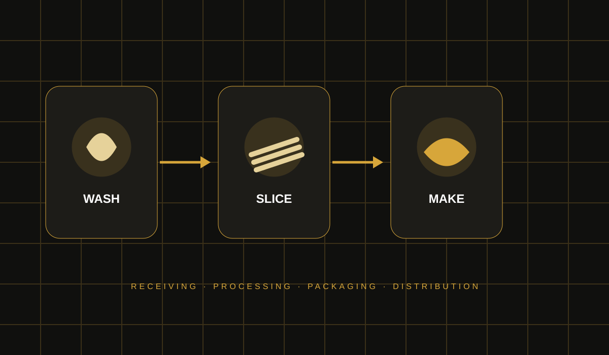

01FARMERSOrigin & supply
Building value through agricultural processing, food manufacturing, innovation and partnerships — starting from Nigeria.
HoneyGuide is being built around the movement of value: agricultural resources are sourced close to origin, transformed through controlled processing, packaged for consumers and connected to wider markets.



These reference images connect African agricultural practice with the hygienic, controlled production environment HoneyGuide is working toward: careful handling, protective equipment, quality control and professional packaging.


HoneyGuide's visual language starts with the people, landscapes, production traditions and transport routes that connect agricultural origin to market opportunity in Nigeria.


HoneyGuide Group Limited is a Nigerian company developing ventures around agricultural value addition, food manufacturing, innovation and strategic partnerships.
Macdon’s Chips is the first product being prepared for market entry. Grace Bite is a planned next product concept in development.
Long before HoneyGuide became an idea, Jerry experienced entrepreneurship firsthand by helping in his grandmother's store in Kabiama, Sagbama LGA.
Her trading business connected farmers, commodities and markets. When she travelled to Aba to restock, he helped manage sales and customers. Those early responsibilities became his first practical exposure to buying, selling, sourcing, storage, pricing and distribution.
Read the full story ↗Jerry’s documented professional journey includes hands-on industrial work, safety leadership, education and entrepreneurship.
He began on the Dangote Fertilizer Project as a rigger in the hydrotest department and was recognised with a Best Rigger award.
He was later appointed to an HSE role and worked in that capacity, building further experience in safety and site responsibility.
Grand Prize Winner, supported by a documented ₦1,000,000 prize cheque dated 03/12/2020.
These figures are planning targets and ambitions, not current production or sales claims.